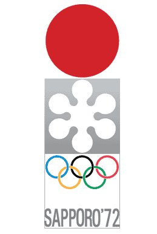
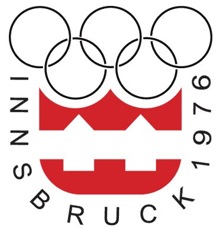
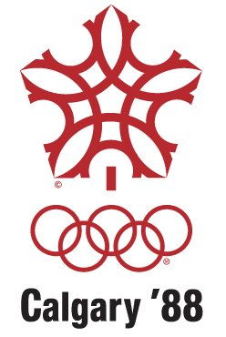
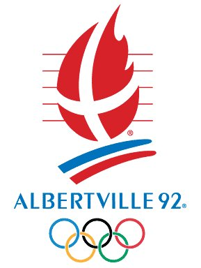
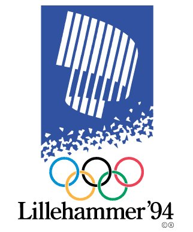
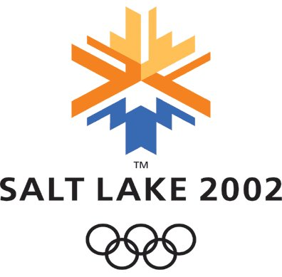
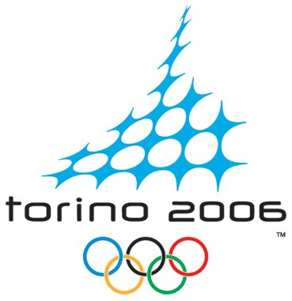

JUEGOS OLIMPICOS DE INVIERNO
Linea de tiempo
Sapporo - Japón
(1972)

Innsbruck - Austria
(1976)

Lake Placid - Estados Unidos
(1980)
Sarajevo - Yugoslavia
(1984)
Calgary - Canadá
(1988)

Albertville - Francia
(1992)

Lillehammer - Noruega
(1994)

Salt Lake City - Estados Unidos
(2002)

Turín - Italia
(2006)
